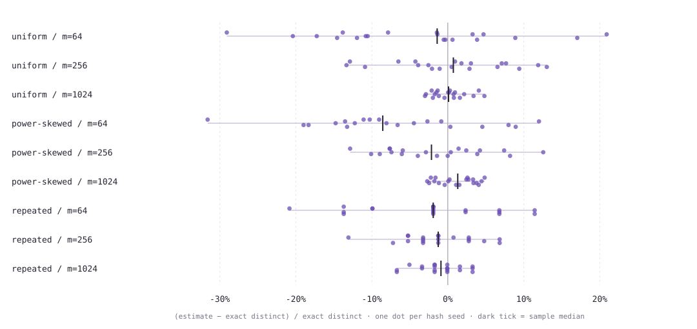
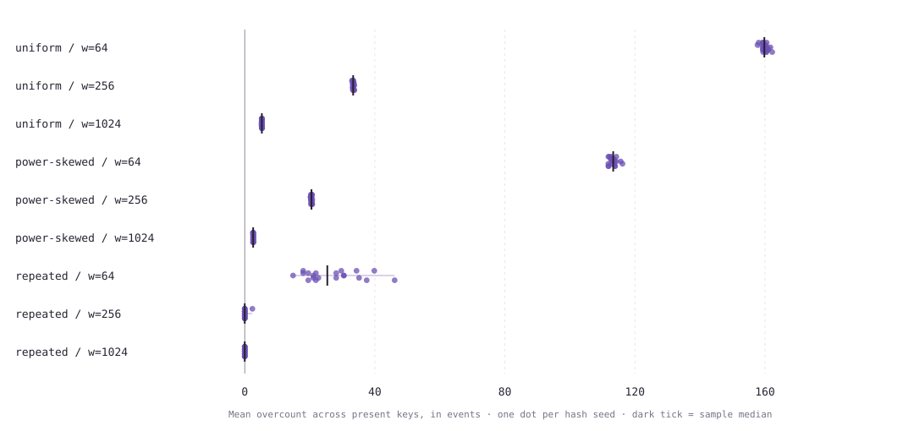

Streaming sketches lab
Compare HyperLogLog distinct-count estimates and Count-Min frequency estimates with exact counts on fixed synthetic streams.
Observed HLL relative RMSE on the uniform stream, increasing registers from 64 to 1,024. These 20 seeded runs do not define a guaranteed error bound.
Count-Min underestimates across 417,960 present-key queries. Nonnegative updates preserve the structural upper-bound property while collisions add error.
Median positive-query rate for absent keys on the uniform stream at width 1,024 and depth 4. A positive Count-Min estimate does not establish membership.
| Stream | Events | Exact distinct keys | Construction |
|---|---|---|---|
| uniform | 12,000 | 3,863 | Seeded uniform key selection |
| power-skewed | 12,000 | 3,039 | U⁴ transform over 4,096 keys |
| repeated | 12,000 | 64 | 50-event blocks over 64 keys |
180 HLL runs and 180 Count-Min runs. Data generator seeds stay fixed; sketch hash seeds vary from 0 to 19. Definitions, hashes and exact references
HyperLogLog across hash seeds
Every dot is an actual run on the same stream with a different hash seed. Negative error means an underestimate. The horizontal span is the observed minimum to maximum, not a confidence interval.

Small-range correction
When the raw estimate is at most 2.5m and empty registers remain, the estimator uses m · ln(m / V). All repeated-stream runs use this correction; the larger-distinct streams use the raw estimator.
Finite hash scope
The high p bits of a 64-bit SHA-256 prefix select a register. Remaining leading-zero rank updates that register. No large-range correction or HLL++ bias tables are implemented.
All estimates, raw values, correction choices and update timings · The familiar asymptotic error expression relies on ideal hashing assumptions; it is not a bound on these points.
Collision overcount and absent keys
Each dot averages over all present keys for one seed; rare keys and frequent keys receive equal weight in that mean. All streams contain 12,000 events. Depth is fixed at four rows.

| Stream / width 1,024 | Median mean overcount | Median within-run p95 overcount | Median absent positive rate |
|---|---|---|---|
| uniform | 5.26 events | 11.0 events | 91.4% |
| power-skewed | 2.59 events | 7.0 events | 81.3% |
| repeated | 0.00 events | 0.0 events | 0.0% |
Per-row hashes are domain-separated SHA-256 calls. This implementation does not establish that they are sampled from the paper's required universal-hash family. Reported error distributions are empirical; no ε/δ probability guarantee is claimed.
All run aggregates and timings · 23,940 raw stratified present/absent query rows
Fixed arrays and exact-count payloads
| Sketch | Configuration | Typed-array bytes | Meaning |
|---|---|---|---|
| HyperLogLog | m = 64 / 256 / 1,024 | 64 / 256 / 1,024 | One byte per register |
| Count-Min | width = 64 / 256 / 1,024; depth = 4 | 1,024 / 4,096 / 16,384 | Four bytes per uint32 counter |
| Exact reference | Distinct keys | Key bytes + 8-byte counts | Compact JSON bytes |
|---|---|---|---|
| uniform | 3,863 | 61,808 | 50,223 |
| power-skewed | 3,039 | 48,624 | 39,663 |
| repeated | 64 | 1,024 | 961 |
Comparable counters, explicit limits
Typed-array bytes come from byteLength. Exact logical payload counts UTF-8 key bytes plus eight bytes per numeric count. Neither measurement includes JavaScript object, Map, string or allocator overhead.
Small key spaces can favor exact counts
The repeated stream has only 64 keys. A wide Count-Min array uses more logical storage than this exact reference. Approximation is a workload tradeoff, not an automatic space win.
Portable snapshot sizes are separately recorded in each raw run. No process-heap savings or memory-compression ratio is claimed.
Compatible merges preserve sketch state
Each stream was split into four partitions by event index modulo four, then merged in order 2, 0, 3, 1. All 6 recorded state comparisons match direct ingestion byte for byte.
| Property | HyperLogLog | Count-Min |
|---|---|---|
| Merge operator | Register-wise maximum | Counter-wise sum; totals add |
| Required compatibility | Same precision and hash seed | Same width, depth and hash seed |
| Merging a snapshot with itself | No change | Doubles represented observations |
| Overflow behavior | Ranks bounded by 64-bit suffix | Rejects update/merge before mutation |
| Deletion support | None | Negative weights rejected |
Portable and validated
Canonical JSON includes version, algorithm, hash identity, seed and configuration. HLL payloads use byte registers. Count-Min payloads use explicit little-endian uint32 values; row sums must equal the total.
Bounded and immutable configuration
Private-backed getters prevent runtime seed/shape changes. State decoding rejects extra fields, duplicate keys, bad ranks, malformed base64, invalid dimensions and impossible row totals.
Hash and configuration changes require a different compatible state. Count-Min cannot detect overlapping source partitions. Exact merge hashes and configuration · State format
Fixed streams, repeated hash seeds
What varies
Twenty deterministic hash seeds are applied to each fixed stream/configuration. Configuration execution order rotates with seed. The streams themselves are not resampled, so these plots describe hashing sensitivity on three particular datasets.
What is timed
Update loops include UTF-8 validation, SHA-256 hashing and register/counter work. Exact-reference construction and serialization are outside those timers. Count-Min queries have their own raw timer. No cross-machine performance guarantee is implied.
npm ci --ignore-scripts npm run typecheck npm test npm run experiment -- --output results-local npm run cli -- estimate results-local/snapshots/uniform-hll.json npm run cli -- estimate results-local/snapshots/uniform-count-min.json key-0000
CI uses a two-seed fresh experiment. The published study uses all twenty seeds. Tests also cover hand-derived ranks, independent Python SHA vectors, weighted updates, exact uint32 boundaries, incompatible merges and atomic rejection.
Primary sources: Flajolet et al., HyperLogLog (2007) and Cormode & Muthukrishnan, Count-Min (2005). Node v24.20.0, recorded 2026-11-21T00:22:02.190Z. Environment and source hashes · Method and findings · Screenshots · Recording